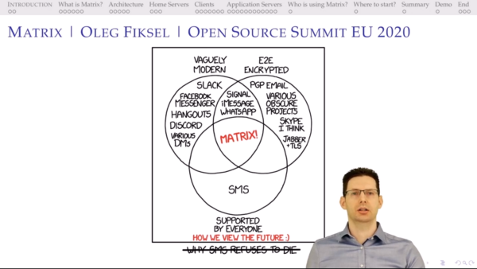

A Matrix overview
At this year's (virtual) Open Source Summit Europe, Oleg Fiksel gave an overview talk on the Matrix decentralized, secure communication network project. Matrix has been seeing increasing adoption recently, he said, including by governments (beyond France, which we already reported on in an article on a FOSDEM 2019 talk) and other organizations. It also aims to bridge all of the different chat mechanisms that people are using in order to provide a unified interface for all of them.
Fiksel is a former security consultant and a longtime member of the Matrix project. His opening slide (slides [PDF]) was an altered version of the xkcd "Why SMS refuses to die" Venn diagram, with "Matrix!" placed at the intersection of the three sets and "How we view the future :)" as the caption. It ably captured one of the main thrusts of his talk and can be seen in the screen shot below.

He began by talking about all of the different chat networks that exist, which, for the most part, are isolated from each other. One idea behind Matrix is to unite all of these networks, but that does not mean that it is just a giant bridge. Matrix is a network in its own right as well. The "difference is that Matrix is friendly to other networks", he said.
He put up a sentence that describes Matrix well: "Matrix is an open network for secure, decentralised real-time communication." It is open in the sense of having an open specification and open implementation. "Secure" means that it has end-to-end encryption by default; it is decentralized because "anyone can run their own Matrix server". These days, real-time communication generally refers to chat rooms, he said, but Matrix can be used for other types of communication, such as for the Internet of Things (IoT).
Key features
Fiksel then listed some of the key features of Matrix from his perspective. The open specification for its protocols along with an open reference implementation means that anyone can write their own server or client—and many have done so. In addition, Matrix has a distributed, federated architecture, which means that messages are not stored in a single central location or owned by a single party. The messages are spread throughout the network and each server owner can decide which other servers to connect with and federate their data with.
From an architectural point of view, it is important that Matrix was built with end-to-end encryption from the ground up, rather than bolting it on later. It also allows Matrix to support encrypted voice and video calls using WebRTC.
The "most unique feature of Matrix" for him is its ability to provide bridges that break the boundaries between networks. That means users do not have to install lots of different clients in order to connect with people on all of the disparate networks. There are also integration widgets to combine Matrix with other tools (e.g. Etherpad).
Last, but not least, he said, the project has a "healthy and friendly community", which is "very important" to him.
Encryption details
In his opinion, any encryption that is not implemented as open-source software is questionable. With closed-source encryption, you have to trust the word of a company or project that they are encrypting the data, but with Matrix you can study the code that implements it.
Encryption is such an important foundation for Matrix that the project took a lot of time to build that support in. It took "much more time" to build the user interface for the encryption, he said; the project looked at all of the different use cases so that it could make the encryption easy to use. Those who are working on encryption should take note that building the crypto code is one thing, but "making it usable for people and easy to use is a bit of a different job".
The Matrix end-to-end encryption implementation has been used for around three years at this point. There are two libraries, Olm, which is based on the cryptographic "double ratchet" specified by the Signal secure-messaging application project, and Megolm, which is a different ratchet used for group messaging. A review of the cryptography in Olm and Megolm was done in 2016. A few problems were found and fixed at that time; Fiksel encouraged security experts to review the code and provide feedback as well.
Architecture
He then described the architecture for Matrix. It starts with users that have clients that talk to a home server using a client-server API. These users will have accounts on one or more home servers. The home servers talk with other home servers to exchange messages using a server-server API. There are also identity servers that can either be centralized (e.g. at matrix.org) or run by various groups to, say, federate with a company's existing identity server. Discovery of home and identity servers is done using DNS records; home servers can also be discovered using a well-known URI scheme.
Application servers are another entity in Matrix; they connect to home servers using an application service API. These servers have more privileges than the clients have. They are mostly used for bridges or integration managers.
Home servers use the server-server API to synchronize messages and room state between them. The API can also be used to request older messages so that a server that has been offline for a day or two can catch up on ongoing conversations. Servers can query for the profiles and status of users on other servers as well.
Multiple home server implementations are available, starting with Synapse, which is the reference implementation written in Python using the Twisted networking framework. Synapse is stable and is used on matrix.org. Dendrite is a Go implementation that is now in beta; it is aimed at being highly performant and scalable. Conduit is written in Rust; it is in an alpha state and lacks federation support, but it is "blazingly fast". A C++ server, Construct, is also performance-oriented. There are others, which are listed in the Matrix directory of tools.
The client-server API was developed to be "as user-friendly as possible", Fiksel said, which makes it easy to create a client. For example, you can use curl to send a message to a room from the command line. There are also "fancy clients", including Element, which is the reference client. Element implements all of the different features that Matrix has and is available as a web application, a desktop application using Electron, and for mobile devices using Android or iOS. Other clients for desktops and mobile devices exist, with different feature sets and maturity levels, which are listed in the directory as well. Terminal-based clients are available for those who prefer that kind of interaction.
An application service has privileged access to its home server, which it needs to transport messages from one network to another if it is performing a bridging function, for example. It can subscribe to server traffic to get access to the events that are occurring in the chat rooms. It also needs to be able to act as a virtual user that will make users on other networks seamlessly appear in a Matrix chat. Users on, say, Telegram or WhatsApp, will appear just like any other Matrix user, he said.
Application services can be used for integrations with other tools. For example, an Etherpad can be added to a chat room by using an integration; users in the room will all be able to see and interact with the Etherpad. There are bots of various kinds that are implemented as integrations; for example, a bot could monitor an RSS feed and post new messages to the room. Another example would be a room for a group that is monitoring a set of servers; it could have Grafana graphs displayed for all participants to discuss. Integration with Jitsi video-conferencing is also possible. Custom integrations can be written as well, of course.
Bridges are application services that sit between a home server and another chat network. On one side they use whatever API is required for the other network, while they use the application services and client-server APIs to the home server. There are two types of bridges: puppeted and bridgebot. A puppeted bridge will present its Matrix messages as native messages in the other network and vice versa. This provides a seamless experience on both sides, so that Telegram users, for example, cannot distinguish Matrix users from other, actual Telegram users.
For various reasons it may not be possible to have a puppeted bridge for a particular network. For example, the network may not support it or the user may not have an account on the other network. In those cases, the system can fall back to a bridgebot type of bridge, which means that a single bot user relays the traffic. To a user of the other network, the messages will all come from a single bridge user, though individual messages in the chat will be separated and prefaced with the Matrix user's name. It would seem to be a kind of clunky way to work around restrictions in some "walled garden" chat networks.
Adoption of Matrix has been growing rapidly over the last few years, he said. Beyond the adoption by the French government, there are three other governments that are running pilot studies. Multiple open-source communities have adopted it, with Mozilla being the most prominent. Lots of universities and virtual conferences are using it; there are also many official Matrix channels for various projects that are available to clients from matrix.org.
Getting started
Fiksel presented some steps to get up and running on Matrix. The first is to choose a home server. There are various lists of public home servers or you can use Element with an account at matrix.org. Using matrix.org should probably be a last resort, he said, as it is fairly overloaded at this point. You can pay to host a home server at a specialized Matrix provider or, of course, host a server yourself; there are guides, an Ansible playbook, as well other efforts to automate the process using Kubernetes Helm charts.
Next up is to choose a client from a list of Matrix clients and connect it to the home server. As he did several times in the talk, he strongly encouraged attendees to get involved with the project. He also noted that Matrix and the Gitter chat network have announced that they are joining forces, which further expands the Matrix community. As mentioned, that community is welcoming and friendly, so interested folks should get involved.
Fiksel spent the last part of his talk on an extended pre-recorded demonstration of some of the bridging features in Matrix. He used the Ansible playbook to deploy a home server, then connected to it using Element and the terminal-based gomuks client. He showed bridging Matrix to both Telegram and IRC, with messages flowing in both directions. For those who find themselves with too many different chat clients, Matrix seems like it could be a welcome alternative. In addition, a decentralized end-to-end encrypted communication system that is not under the thumb of some corporation or other organization has some attractions of its own.
| Index entries for this article | |
|---|---|
| Security | Communication |
| Conference | Open Source Summit Europe/2020 |
Posted Nov 5, 2020 1:17 UTC (Thu)
by khim (subscriber, #9252)
[Link] (4 responses)
Hmm… but all these chat rooms are designed to be incompatible not because of technical issues, but because large companies which own them don't wish to cooperate. And they kill any and all bots which grow beyond certain size (Telegram is most friendly, but I don't think even it would tolerate bridge from it to some outside party like Matrix).
And most users don't care enough to rent and support their own servers so someone have to do that. That is not cheap and at some point that “someone” would try to make it into their own silo…
How is Matrix planning to solve that problem?
Posted Nov 5, 2020 4:26 UTC (Thu)
by pabs (subscriber, #43278)
[Link] (1 responses)
Posted Nov 5, 2020 15:32 UTC (Thu)
by Lennie (subscriber, #49641)
[Link]
Posted Nov 5, 2020 15:30 UTC (Thu)
by Lennie (subscriber, #49641)
[Link]
https://archive.fosdem.org/2020/schedule/event/dip_p2p_ma...
Posted Nov 5, 2020 20:07 UTC (Thu)
by jo42 (subscriber, #59640)
[Link]
Posted Nov 5, 2020 8:00 UTC (Thu)
by ncm (guest, #165)
[Link] (9 responses)
There is a python daemon, pantalaimon, meant to patch around lack of support for E2EE in clients, but when I try to run it on my PinePhone it completely messes up my network configuration. That's too bad, because Element(desktop) can't be built for arm64 ("yet") and Fractal, which does work, doesn't support E2EE yet. I gather Signal(desktop) isn't ported to GTK on arm64, for the same reason--Electron apps vs. ARM JS engines or something.
I found an Android Signal -> Matrix gateway app, but I could not figure out how to set it up. I have not heard of an SMS -> Matrix gateway, although there ought to be one, or a desktop Signal -> Matrix gateway.
For some reason the Android Matrix app Element often shows messages as "encrypted", with no text, sometimes for days after they were sent. I would like to know what is failing, there: my homeserver? Their homeserver? Their client not awake at the same time as mine? Bug in Element?
I had LibremOne as my homeserver since they first announced, until it became clear Purism has no intention to maintain it, and dropped the subscription. I switched to privacytools.io and set up a periodic donation there before I discovered that social.debian.org maintains two homeservers. (Why two?)
The Android Matrix client app Element, said to be coded in Rust, got kind of crashy around release 1.0.9, but has usually worked well. Although, discovering chat rooms, in it, is still a far from obvious process. Lately it spends a great deal of time spinning progress bars, which I have been encouraged to blame on Matrix.org homeserver slowness.
The Matrix.org homeserver is slow because 99%+ of Matrix users are hosted it, and 99% of chat rooms and gateways to other protocols, and is coded in Python. A Go replacement is in the works, and might help, but I can't help but think that it being easier to host and find rooms on other servers, and to migrate one's account to a different homeserver, would produce more sustainable results.
That, and automated means to keep homeserver installations up to date. Unfortunately, Element the company gets consulting fees for helping maintain homeservers, so that seems unlikely to happen.
Despite all of the above, Matrix seems like it ought to be the future.
Posted Nov 5, 2020 8:51 UTC (Thu)
by erdnaxeli (guest, #102571)
[Link] (3 responses)
For SMS, here is this app (it is actually just a bot, not a bridge): https://github.com/tijder/SmsMatrix. For signal there is this bridge: https://github.com/tulir/mautrix-signal. The first one can be setup without hosting an homeserver, but for the latter you need to administrate your own homeserver.
> The Android Matrix client app Element, said to be coded in Rust, got kind of crashy around release 1.0.9
It is coded in Kotlin. I personally didn't experience that, Element is pretty stable. If you have any troubles you should open an issue in their github: https://github.com/vector-im/element-android/issues.
> I can't help but think that it being easier to host and find rooms on other servers, and to migrate one's account to a different homeserver, would produce more sustainable results.
The matrix.org is indeed a bit slow (but it is improving: https://matrix.org/blog/2020/11/03/how-we-fixed-synapses-...). Hosting your own homeserver is a good solution, for yourself and for the network. But the rooms are not hosted in one specific server. They are actually hosted by all the servers participating in it, as the servers talks in a federated way without any central point.
> That, and automated means to keep homeserver installations up to date. Unfortunately, Element the company gets consulting fees for helping maintain homeservers, so that seems unlikely to happen.
What do you need? I maintain an homeserver and 90% of the time the only thing to do is `apt update && apt upgrade` (an apt repository is provided). If you need help there is a community room: #synapse:matrix.org.
> Despite all of the above, Matrix seems like it ought to be the future.
I agree !
Posted Nov 6, 2020 5:28 UTC (Fri)
by ncm (guest, #165)
[Link] (2 responses)
> What do you need? I maintain an homeserver and 90% of the time the only thing to do is `apt update && apt upgrade`
I relied, incorrectly as it turns out, LibremOne's explanation why their homeserver was in such bad shape. (This was in July, when I dropped my subscription. They might have fixed it since.)
Posted Nov 6, 2020 9:49 UTC (Fri)
by ptman (subscriber, #57271)
[Link] (1 responses)
Posted Nov 6, 2020 14:30 UTC (Fri)
by ncm (guest, #165)
[Link]
Having committed to an address for multiple services, it can be hard to move. I was lucky that only family members knew my LibremOne address.
Posted Nov 5, 2020 8:51 UTC (Thu)
by ptman (subscriber, #57271)
[Link] (3 responses)
It was a goal from the start, but matrix supports simple clients without E2EE as well.
> I have not heard of an SMS -> Matrix gateway
There are a couple of bridges:
> The Android Matrix client app Element, said to be coded in Rust
Where did you read this claim? Mostly Kotlin, I believe https://github.com/vector-im/element-android/
> The Matrix.org homeserver is slow because 99%+ of Matrix users are hosted it, and 99% of chat rooms and gateways to other protocols, and is coded in Python.
Not really 99%. It would be great if matrix.org released stats on this, but matrix.org has been decreasing in significance, roughly accounting for something like 50% of users. Python is one factor limiting processing speed, but a recent blog post shows how they've scaled to multiple processes (and CPUs) instead: https://matrix.org/blog/2020/11/03/how-we-fixed-synapses-...
t2bot.io is one of the most popular bridge hosts and is independent.
> automated means to keep homeserver installations up to date
The synapse team releases apt/deb packages and docker images.
Posted Nov 6, 2020 5:22 UTC (Fri)
by ncm (guest, #165)
[Link] (2 responses)
> Not really 99%. It would be great if matrix.org released stats on this, but matrix.org has been decreasing in significance, roughly accounting for something like 50% of users. Python is one factor limiting processing speed, but a recent blog post shows how they've scaled to multiple processes (and CPUs) instead: <https://matrix.org/blog/2020/11/03/how-we-fixed-synapses-...>.
A very short time ago it was reported as 99%, so that is outstanding progress.
Better ways to discover chat rooms are needed. How do you know where to look, other than on matrix.org?
>> automated means to keep homeserver installations up to date
> The synapse team releases apt/deb packages and docker images.
I guess LibremOne has no excuse, then.
Posted Nov 6, 2020 9:53 UTC (Fri)
by ptman (subscriber, #57271)
[Link]
That is the nature of federated services. How to you get a list of all email addresses? People need to advertise their email addresses where other people are likely to find them. That said, each matrix home server has a room directory, which can be queried from other servers if enabled. In element (web) you need to open the explore rooms view and select or add the desired server.
Posted Nov 6, 2020 18:09 UTC (Fri)
by emorrp1 (guest, #99512)
[Link]
Element -> Explore Rooms -> Matrix rooms -> Add a new server...
I agree a user needs to a) know this exists and b) know what to add - I went with a list of foss related instances and those to do with bridging. Bonus points if you self-host the web client with e.g. nginx because you can add it to /config.json -> roomDirectory -> servers:
"gnome.org",
Posted Nov 5, 2020 16:03 UTC (Thu)
by re:fi.64 (subscriber, #132628)
[Link]
Posted Nov 5, 2020 18:54 UTC (Thu)
by rdorsch (guest, #5833)
[Link] (1 responses)
Posted Nov 5, 2020 21:52 UTC (Thu)
by Arathorn (guest, #101018)
[Link]
Posted Nov 5, 2020 19:14 UTC (Thu)
by dilinger (subscriber, #2867)
[Link]
* Although I'm also forced to use a backport on my debian server due to security issues and various critical server changes, which is kind of irritating. But that's just because it's still maturing, and hopefully won't be an issue in another year or two.
Posted Nov 5, 2020 19:21 UTC (Thu)
by mirabilos (subscriber, #84359)
[Link] (11 responses)
I don’t see the point.
Posted Nov 5, 2020 21:55 UTC (Thu)
by Arathorn (guest, #101018)
[Link] (2 responses)
Posted Nov 5, 2020 22:07 UTC (Thu)
by mirabilos (subscriber, #84359)
[Link] (1 responses)
It’s true that servers host MUCs, but they are as easily moved to a different server as needed. They are just where the settings (such as topic) are stored.
Posted Nov 5, 2020 22:29 UTC (Thu)
by Cyberax (✭ supporter ✭, #52523)
[Link]
> but they are as easily moved to a different server as needed.
Posted Nov 6, 2020 5:14 UTC (Fri)
by ncm (guest, #165)
[Link] (7 responses)
Posted Nov 6, 2020 11:56 UTC (Fri)
by pizza (subscriber, #46)
[Link] (3 responses)
It's not a core requirement, but yes, it's had it for well over a decade.
Posted Nov 15, 2020 15:59 UTC (Sun)
by HelloWorld (guest, #56129)
[Link] (2 responses)
Posted Nov 15, 2020 17:26 UTC (Sun)
by mirabilos (subscriber, #84359)
[Link] (1 responses)
Posted Nov 15, 2020 17:51 UTC (Sun)
by pizza (subscriber, #46)
[Link]
That was remarkably difficult to parse.
But just to be clear, in practice, I have yet to see a "Jabber" client [1] that doesn't implement some form of E2E encryption.
[1] As opposed to corporate IM clients that are built on top of XMPP but don't actually interoperate with anything outside their own silo.
Posted Nov 6, 2020 14:46 UTC (Fri)
by mirabilos (subscriber, #84359)
[Link] (2 responses)
Posted Nov 12, 2020 10:52 UTC (Thu)
by wiktor (guest, #132450)
[Link] (1 responses)
OTR was withdrawn from clients due to various reasons and there is a newer OpenPGP XEP but as it doesn't offer some features of OMEMO (like forward secrecy) it's not implemented by clients.
Posted Nov 13, 2020 6:18 UTC (Fri)
by pabs (subscriber, #43278)
[Link]
Posted Nov 6, 2020 7:10 UTC (Fri)
by marcH (subscriber, #57642)
[Link]
This effortlessly solves IRC's biggest issue: missing messages when your laptop is closed.
One other good way to make IRC usable is Quassel which is fairly easy to setup for what it does but still nowhere near as easy as opening a free account on element.io
Posted Jan 21, 2021 0:56 UTC (Thu)
by Smon (guest, #104795)
[Link]
A Matrix overview
A Matrix overview
A Matrix overview
A Matrix overview
A Matrix overview
A Matrix overview
A Matrix overview
A Matrix overview
A Matrix overview
LibremOne
A Matrix overview
https://github.com/tijder/SmsMatrix
https://mau.dev/tulir/mautrix-amp
A Matrix overview
A Matrix overview
A Matrix overview
"kde.org",
"matrix.debian.social",
"chat.weho.st",
"matrix.org",
"maunium.net",
"mozilla.org",
"tchncs.de"
A Matrix overview
A Matrix overview
A Matrix overview
A Matrix overview
So, where is this different from Jabber?
So, where is this different from Jabber?
So, where is this different from Jabber?
So, where is this different from Jabber?
I implemented the group chat client, and as far as I remember, moving to a different server would require basically restarting all the conversations. Mostly because rooms include the server name and I don't think that there's a way to redirect users to another room.
So, where is this different from Jabber?
So, where is this different from Jabber?
So, where is this different from Jabber?
IOW, the answer is no.
So, where is this different from Jabber?
So, where is this different from Jabber?
So, where is this different from Jabber?
So, where is this different from Jabber?
So, where is this different from Jabber?
A Matrix overview
Metadata